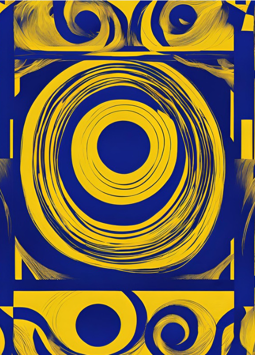
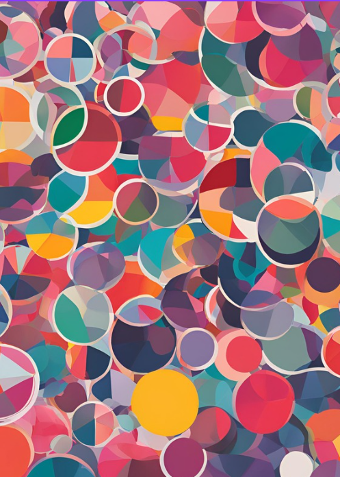

II GUERRA MUNDIAL
Um site educacional desenvolvido pela turma de Informática do 3º ano, voltado para a apresentação de dados sobre a Segunda Guerra Mundial. O projeto reúne informações sobre os principais eventos históricos, uma linha do tempo interativa, potências envolvidas, batalhas marcantes, e curiosidades, como avanços tecnológicos da época.
Código fonte

Linha do Tempo

Sei lá

Sei lá

Sei lá

Sei lá